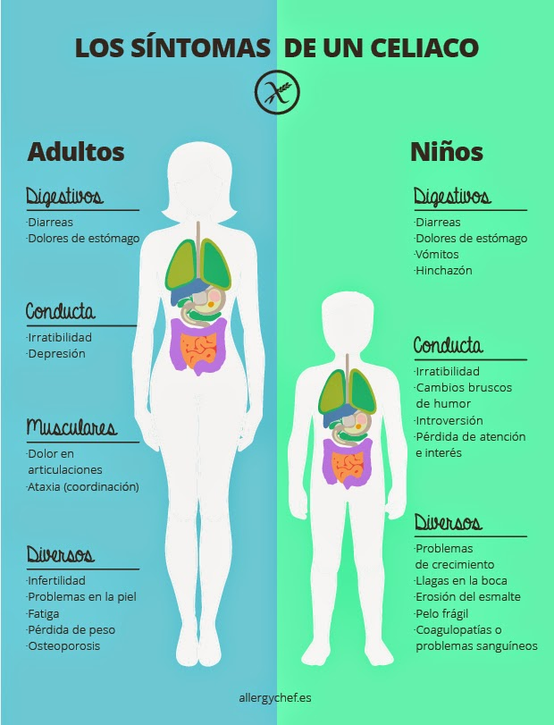

-
Causas
Se desconoce la causa exacta de la enfermedad celíaca. El revestimiento de los intestinos tiene pequeñas áreas llamadas vellosidades que se proyectan hacia afuera en la abertura del intestino. Estas estructuras ayudan a absorber los nutrientes. Cuando las personas con enfermedad celíaca consumen alimentos con gluten, su sistema inmunitario reacciona causando daño a las vellosidades intestinales. Debido a ese daño, las vellosidades son incapaces de absorber el hierro, las vitaminas y los nutrientes en forma apropiada. En consecuencia, pueden presentarse una serie de síntomas y problemas de salud. La enfermedad se puede manifestar en cualquier momento de la vida desde la lactancia hasta la adultez avanzada.

¿Que es ser celiaco?
La enfermedad celíaca es una afección autoinmune que daña al revestimiento del intestino delgado.
Este daño proviene de una reacción a la ingestión de gluten. Esta es una sustancia que se
encuentra en el trigo, la cebada, el centeno y posiblemente la avena. Y también en alimentos
elaborados con estos ingredientes.
El intestino dañado no puede absorber los nutrientes de los alimentos.